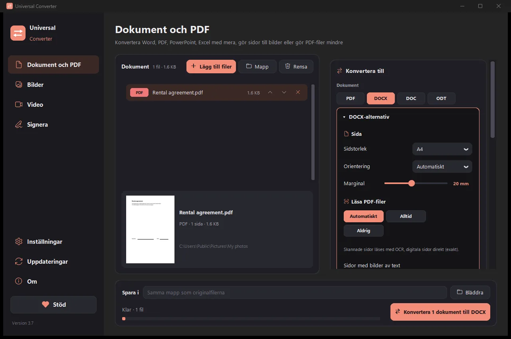

Ta ut tabeller från PDF-fakturor till Excel
Att skriva av fakturarader för hand går långsamt och blir lätt fel. Universal Converter hittar tabellerna i varje faktura, oavsett om den är en PDF, en skanning eller ett foto, och lägger dem i ett kalkylblad som du kan sortera, summera och importera.
Så installerar och uppdaterar du
- Öppna den hämtade .dmg-filen och dra Universal Converter till Program.
- Öppna appen. Första gången blockerar macOS den eftersom den inte är signerad av Apple: klicka på Klar.
- Öppna Systeminställningar > Integritet och säkerhet, rulla nedåt, klicka på Öppna ändå och ange ditt lösenord. Det gör du bara en gång.
Uppdateringar: om du tillåter det när appen öppnas första gången söker den efter nya versioner varje gång den startar, kontrollerar deras digitala signatur och installerar dem när du väljer.
Så installerar och uppdaterar du
- Tryck på Ladda ned för Android på telefonen.
- Öppna den hämtade filen. Om Android frågar tillåter du webbläsaren eller filhanteraren att installera appar.
- Tryck på Installera.
Uppdateringar: när du öppnar appen söker den efter en ny version och säger till när den är klar. Ladda ned den på samma sätt och installera den över den gamla; dina inställningar behålls.
Så installerar och uppdaterar du
- Ladda ned .AppImage-filen.
- Gör den körbar: högerklicka, öppna Egenskaper > Behörigheter och tillåt att den körs som program (eller i en terminal: chmod +x Universal-Converter-*.AppImage).
- Dubbelklicka på den. Inget installeras: appen är den här enda filen.
Uppdateringar: om du tillåter det när appen öppnas första gången söker den efter nya versioner varje gång den startar, kontrollerar deras digitala signatur och ersätter AppImage-filen där den ligger.
Så här gör du
- Öppna Universal Converter.
- Dra dina filer eller en hel mapp till fönstret, eller klicka på Lägg till filer.
- Välj Excel (eller CSV). Lägg till flera fakturor på en gång för att konvertera dem i ett svep.
- Klicka på Konvertera. De nya filerna sparas bredvid originalen, eller i den mapp du väljer.

Varför göra det utan internet?
Universal Converter gör jobbet på din egen enhet. Dina filer förblir privata, stora filer är inget problem, och det fungerar utan internetanslutning.
Mer den kan göra
- Konvertera en PDF till Word
- Konvertera Word-dokument till PDF
- Slå ihop flera filer till en PDF
- Komprimera en PDF till en storlek du väljer
- Komprimera en PDF till 100 KB, 200 KB eller valfri storlek för webbformulär
- Konvertera PDF-sidor till JPG-bilder
- Gör ett skannat dokument till en redigerbar Word-fil
- Konvertera bilder mellan JPG, PNG, WEBP med mera
- Ändra storlek på bilder eller krymp dem till en filstorlek
- Ändra storlek på ett foto eller en signatur till 20 KB, 50 KB eller exakta pixlar
- Slå ihop foton till en PDF
- JPG till PDF under 100 KB
- Kopiera texten från en bild (OCR)
- Komprimera en video utan att ladda upp den
- Konvertera videor mellan MP4, MKV, WebM, MOV och AVI
- Spara ljudet från en video som MP3
- Gör en GIF av en video
- Hämta tabeller från en PDF till Excel
- Konvertera ett kontoutdrag i PDF till Excel
- Signera en PDF
- Fyll i ett PDF-formulär